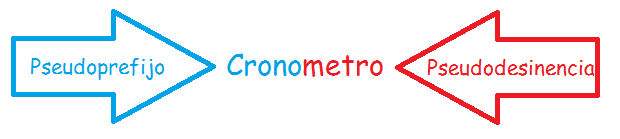

Las palabras se dividen en simples y compuestas, las simples consisten en una sola raíz, mientras que las compuestas presentan 2 raíces o más. Ademas, las palabras compuestas cuentan con 2 o más elementos de los siguientes:
| Elemento | En que consiste | Ejemplos |
|---|---|---|
| Prefijo | Letra o letras que se anteponen a la raíz, dan lugar a una palabra compuesta | Anti- Tele- |
| Raíz | Parte principal de una palabra, generalmente es invariable, es la base para formar otras palabras | Tierra Mesa |
| Sufijo | Letra o letras que se colocan despues de la raíz, dan lugar a una palabra derivada | -ismo -ción |
| Flexión | Agregado a la raíz para expresar genero, numero o persona | -a -es |
Para que una lengua se mantenga viva, esta se mantiene en unaconstante renovación de su vocabulario por medio de préstamos lingüísticos, o sea la apropiacion y adaptacion de palabras de otras lenguas a esta, algunos ejemplos siendo Cliché, ópera, fútbol, etc. ; o también se puede dar a travez de neologismos, que consiste en la formación de nuevas palabras, en esta se utiliza la Composición y la Derivación.
Uso de prefijos para la formación de palabras, puede ser composición propia o composición impropia. Una composición propia se caracteriza utilizar el prefijos a (sin, ejemplos: abismo, anaerobio, acromático, etc.), dis (dificultad, ejemplos: disentería, disnea, discapacitado, etc.) o hemis (medio, mitad, ejemplos: hemisferio, hemicránea, etc.), siendo que la composición impropia utiliza cualquier otro prefijo.
Es la formación de palabras mediante sufijos, algunos ejemplos de sufijos son:
Son raíces (palabras griegas) con significado propio e independiente, que se utilizan a manera de sufijos o prefijos.
Crono: tiempo

Metro: medida
Cronometro: Aparato para medir el tiempo.